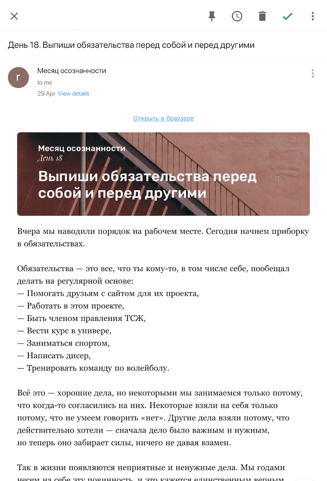

Это бесплатная почтовая рассылка, которая помогает быть осознанней.
Осознанность — состояние «здесь и сейчас». Умение чувствовать каждый момент, а не проживать жизнь на автомате. Осознанность помогает быть счастливее, лучше себя чувствовать, находить время для любимых занятий и острее проживать жизнь.
Ты будешь получать каждый день письмо с заданием — что делать и что это дает. 30 дней, 30 писем. Задания такие: медитировать 5 минут, отказаться на день от телефона, не заходить в соцсети и так далее. Все, что мы предлагаем, мы делали сами.
Большинство заданий можно превратить в регулярную практику, поэтому если тебе что-то понравилось, продолжай. Если ты хотел выполнить практику, но забыл, ничего страшного — выполни её в другой день.
Мы работаем в Контуре. Каждый месяц дизайнеры компании дают волю фантазии и рисуют календарь. Мы решили выйти за рамки формата и в октябре 2017 года сделали календарь осознанности, хороших привычек и любви к себе. На каждый день в календаре было задание. В корпоративной соцсети мы завели сообщество, где публиковали посты с заданием на завтра. Всем понравилось, и мы решили дальше делиться знаниями. Мы прочитали много книг об осознанности, минимализме и эссенциализме. О правильном сне и о том, как успевать на работе и не жертвовать отдыхом. Мы думали «Как жаль, что этому не учат в школе».